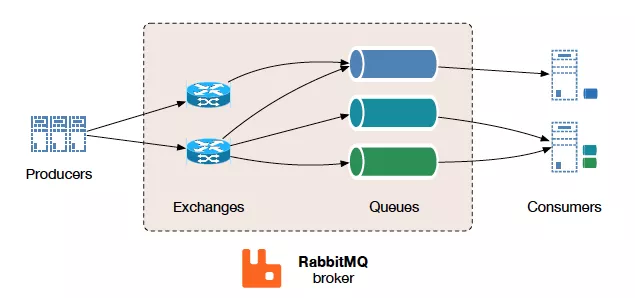
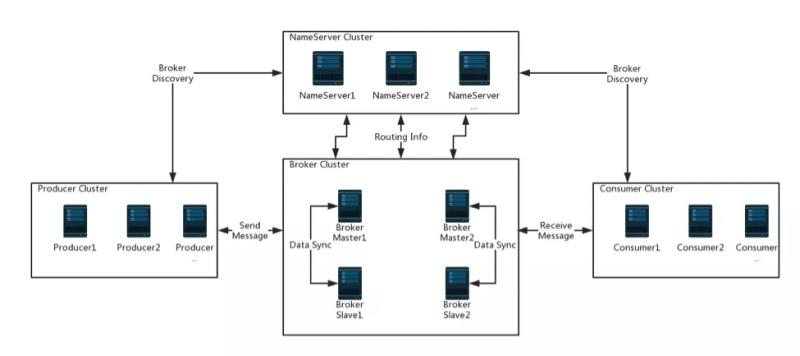
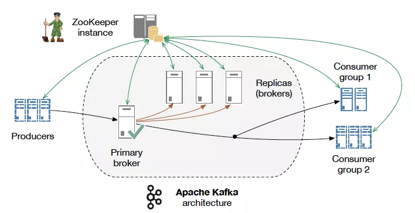
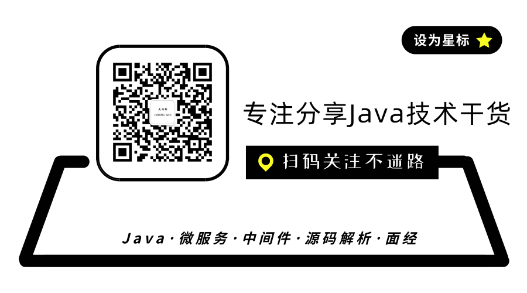

在高并发业务场景下，消息队列在流量削峰、解耦上有不可替代的作用。当前使用较多的消息队列有 RabbitMQ、RocketMQ、ActiveMQ、Kafka、ZeroMQ、Pulsar 等。
消息队列这么多，到底该选择哪款消息队列呢？
选择消息队列的基本标准
虽然这些消息队列在功能和特性方面各有优劣，但我们在选择的时候要有一个基本标准。
首先，必须是开源的产品。开源意味着，如果有一天你使用的消息队列遇到了一个影响你系统业务的 Bug，至少还有机会通过修改源代码来迅速修复或规避这个 Bug，解决你的系统的问题，而不是等待开发者发布的下一个版本来解决。
其次，这个产品必须是近年来比较流行并且有一定社区活跃度的产品。流行的好处是，只要使用场景不太冷门，遇到 Bug 的概率会非常低，因为大部分遇到的 Bug，其他人早就遇到并且修复了。在使用过程中遇到的一些问题，也比较容易在网上搜索到类似的问题，然后很快的找到解决方案。还有一个优势就是，流行的产品与周边生态系统会有一个比较好的集成和兼容。
最后，作为一款及格的消息队列，必须具备的几个特性包括：
- 消息的可靠传递：确保不丢消息；
- Cluster：支持集群，确保不会因为某个节点宕机导致服务不可用，当然也不能丢消息；
- 性能：具备足够好的性能，能满足绝大多数场景的性能要求。
接下来看一下有哪些符合上面这些条件，可供选择的开源消息队列。
RabbitMQ

首先，我们来看下消息队列 RabbitMQ。RabbitMQ 于 2007 年发布，是使用 Erlang 编程语言编写的，最早是为电信行业系统之间的可靠通信设计的，也是少数几个支持 AMQP 协议的消息队列之一。
RabbitMQ：轻量级、迅捷，它的宣传口号，也很明确地表明了 RabbitMQ 的特点：Messaging that just works，开箱即用的消息队列。也就是说，RabbitMQ 是一个相当轻量级的消息队列，非常容易部署和使用。
RabbitMQ 一个比较有特色的功能是支持非常灵活的路由配置，和其他消息队列不同的是，它在生产者（Producer）和队列（Queue）之间增加了一个 Exchange 模块，可以理解为交换机。
Exchange 模块的作用和交换机非常相似，根据配置的路由规则将生产者发出的消息分发到不同的队列中。路由的规则也非常灵活，甚至可以自己来实现路由规则。如果正好需要这个功能，RabbitMQ 是个不错的选择。
RabbitMQ 的客户端支持的编程语言大概是所有消息队列中最多的。
接下来说下 RabbitMQ 的几个问题：
- RabbitMQ 对消息堆积的支持并不好，当大量消息积压的时候，会导致 RabbitMQ 的性能急剧下降。
- RabbitMQ 的性能是这几个消息队列中最差的，大概每秒钟可以处理几万到十几万条消息。如果应用对消息队列的性能要求非常高，那不要选择 RabbitMQ。
- RabbitMQ 使用的编程语言 Erlang，扩展和二次开发成本高。
RocketMQ

RocketMQ 是阿里巴巴在 2012 年开源的消息队列产品，用 Java 语言实现，在设计时参考了 Kafka，并做出了自己的一些改进，后来捐赠给 Apache 软件基金会，2017 正式毕业，成为 Apache 的顶级项目。RocketMQ 在阿里内部被广泛应用在订单，交易，充值，流计算，消息推送，日志流式处理，Binglog 分发等场景。经历过多次双十一考验，它的性能、稳定性和可靠性都是值得信赖的。
RocketMQ 有着不错的性能，稳定性和可靠性，具备一个现代的消息队列应该有的几乎全部功能和特性，并且它还在持续的成长中。
RocketMQ 有非常活跃的中文社区，大多数问题可以找到中文的答案。RocketMQ 使用 Java 语言开发，源代码相对比较容易读懂，容易对 RocketMQ 进行扩展或者二次开发。
RocketMQ 对在线业务的响应时延做了很多的优化，大多数情况下可以做到毫秒级的响应，如果你的应用场景很在意响应时延，那应该选择使用 RocketMQ。
RocketMQ 的性能比 RabbitMQ 要高一个数量级，每秒钟大概能处理几十万条消息。
RocketMQ 的劣势是与周边生态系统的集成和兼容程度不够。
Kafka

Apache Kafka 是一个分布式消息发布订阅系统。它最初由 LinkedIn 公司基于独特的设计实现为一个分布式的日志提交系统，之后成为 Apache 项目的一部分。
在早期的版本中，为了获得极致的性能，在设计方面做了很多的牺牲，比如不保证消息的可靠性，可能会丢失消息，也不支持集群，功能上也比较简陋，这些牺牲对于处理海量日志这个特定的场景都是可以接受的。
但是，随后几年 Kafka 逐步补齐了这些短板，当下的 Kafka 已经发展为一个非常成熟的消息队列产品，无论在数据可靠性、稳定性和功能特性等方面都可以满足绝大多数场景的需求。
Kafka 与周边生态系统的兼容性是最好的没有之一，尤其在大数据和流计算领域，几乎所有的相关开源软件系统都会优先支持 Kafka。
Kafka 性能高效、可扩展良好并且可持久化。它的分区特性，可复制和可容错都是不错的特性。
Kafka 使用 Scala 和 Java 语言开发，设计上大量使用了批量和异步的思想，使得 Kafka 能做到超高的性能。Kafka 的性能，尤其是异步收发的性能，是三者中最好的，但与 RocketMQ 并没有量级上的差异，大约每秒钟可以处理几十万条消息。
在有足够的客户端并发进行异步批量发送，并且开启压缩的情况下，Kafka 的极限处理能力可以超过每秒 2000 万条消息。
但是 Kafka 异步批量的设计带来的问题是，它的同步收发消息的响应时延比较高，因为当客户端发送一条消息的时候，Kafka 并不会立即发送出去，而是要等一会儿攒一批再发送，在它的 Broker 中，很多地方都会使用这种先攒一波再一起处理的设计。当你的业务场景中，每秒钟消息数量没有那么多的时候，Kafka 的时延反而会比较高。所以，Kafka 不太适合在线业务场景。
消息队列对比
| Kafka | RocketMQ | RabbitMQ | |
|---|---|---|---|
| 单机吞吐量 | 十万级 | 十万级 | 万级 |
| 开发语言 | Java & Scala | Java | Erlang |
| 消息延迟 | 毫秒级 | 毫秒级 | 微秒级 |
| 消息丢失 | 参数优化配置后可做到0丢失 | 参数优化配置后可做到0丢失 | 有较低的概率丢失 |
| 消费模式 | Pull | Pull+Push | Pull+Push |
| topic数量对吞吐量的影响 | topic达到几十，几百个时，吞吐量会大幅度下降 | topic达到几百，几千个时，吞吐量会有较小幅度的下降 | \ |
| 可用性 | 非常高（分布式） | 非常高（主从） | 高（主从） |
| 总结 | 吞吐量高，微秒级延时，分布式高可用，最好是支持较少topic数量，会有消息重复现象 | 可支撑大规模topic数量，方便二次开发和扩展 | 不支持集群动态扩容，扩展和二次开发难 |
总结
本文分别介绍了 RabbitMQ，RocketMQ 和 Kafka 几种常见的消息队列，阐述了各种消息队列的主要特点和优劣势。
在了解了上面这些开源消息队列各自的特点和优劣势后，对于消息队列及相关技术选型，相信你会有更深入的理解和认识。以下几条选择的建议可以参考：
- 如果消息队列不是将要构建系统的重点，对消息队列功能和性能没有很高的要求，只需要一个快速上手易于维护的消息队列，建议使用 RabbitMQ。
- 如果系统使用消息队列主要场景是处理在线业务，比如在交易系统中用消息队列传递订单，需要低延迟和高稳定性，建议使用 RocketMQ。
- 如果需要处理海量的消息，像收集日志、监控信息或是埋点这类数据，或是你的应用场景大量使用了大数据、流计算相关的开源产品，那 Kafka 是最适合的消息队列。
每一个消息队列都有自己的优劣势，需要根据现有系统的情况，选择最适合的消息队列，更多细节和原理性的东西，还需在实践中见真知！

参考
 京公网安备 11010502036488号
京公网安备 11010502036488号